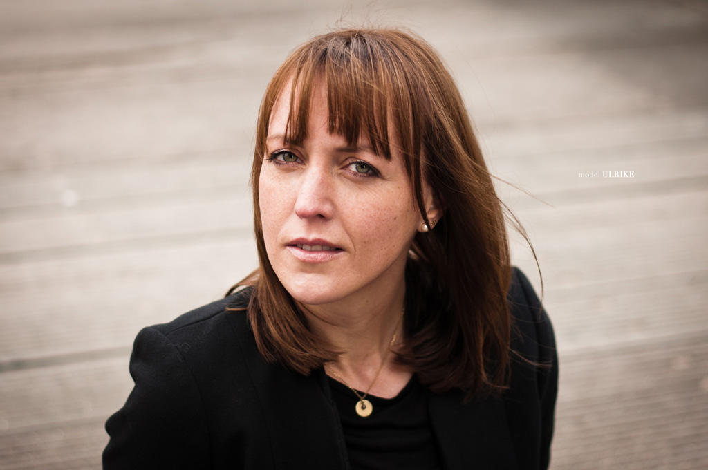
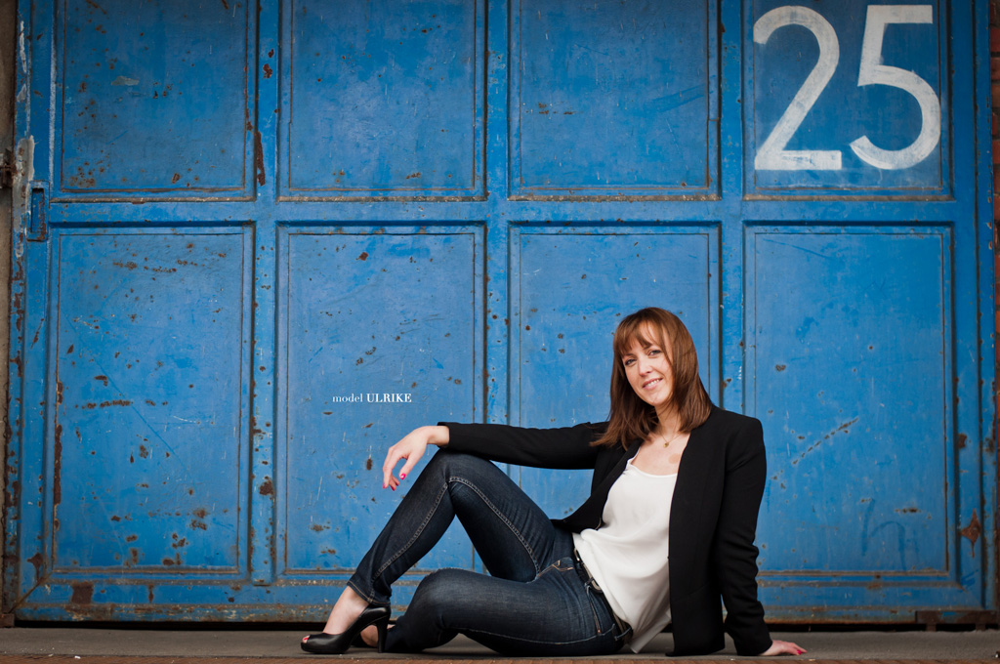
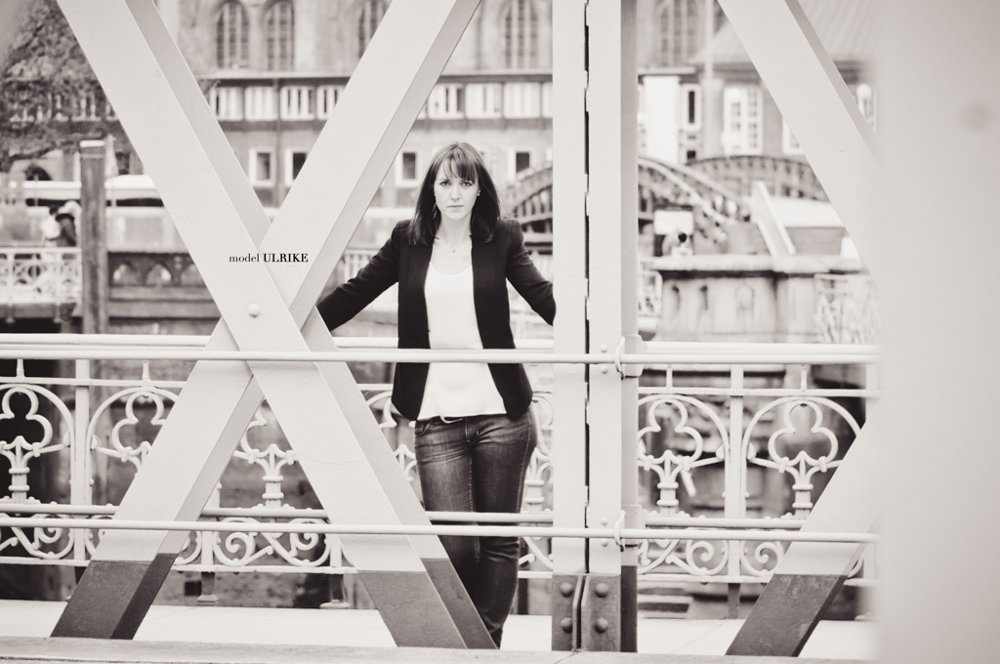
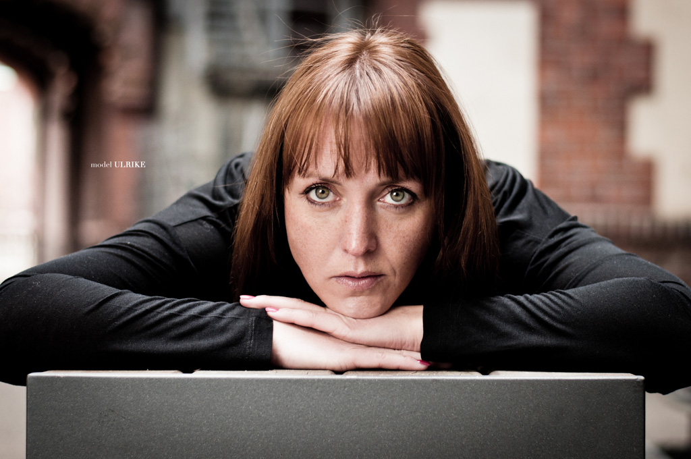

<div class="w-arrows">
    <div class="btn-prev"></div>
    <div class="close"></div>
    <div class="btn-next"></div>
</div>

<div class="img-project">
    <div class="nav-wrapper">
        <div class="nav-work">
            <div class="w-prev"></div>
            <div class="w-next"></div>
        </div>
        <div class="wrapper-project">
            <ul>
                <li></li>

                <li></li> 

                <li></li>  

                <li></li> 
            </ul>
        </div>
        <div class="controller-3">
            <ul>
            </ul>
        </div>
    </div>
    <div class="clear"></div>
    <div class="info-project">
        <div class="tag-project">Shooting mit</div>
        <div class="title-project">Ulrike</div>
        <div class="spacer"></div>
        <div class="description">Für das Fotoshooting mit Ulrike haben wir das hamburger Hafengebiet ausgesucht, das uns eine Vielfalt an interessanten Ecken anbot. Innerhalb des 2,5-stündigen Shooting sind sehr viele natürliche Bilder entstanden.</div>
    </div>
</div>
<div class="clear"></div>
<div class="w-arrows last">
    <div class="btn-prev"></div>
    <div class="close"></div>
    <div class="btn-next"></div>
</div>